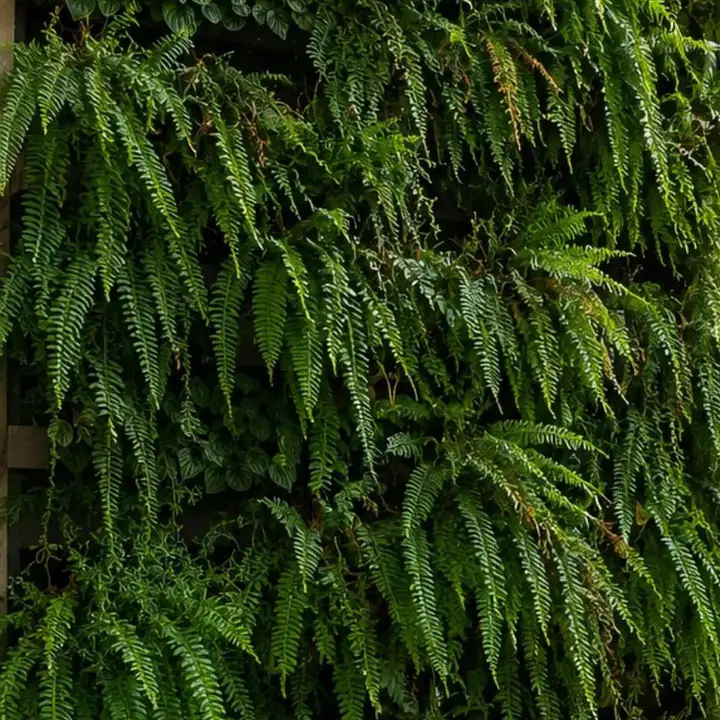

Serviço
Jardim vertical onde não existe chão.
Muro cego, fachada sem graça, hall de prédio, parede de varanda. Onde não cabe canteiro, cabe parede verde — e o impacto visual por metro quadrado é o maior do paisagismo.

Natural ou preservado: a decisão que muda tudo
São dois produtos diferentes, com rotinas opostas. Escolher errado é a origem de quase toda frustração com parede verde.
| Natural | Preservado | |
|---|---|---|
| O que é | Planta viva, em substrato | Planta natural tratada, que para de crescer |
| Irrigação | Necessária, embutida no painel | Nenhuma |
| Manutenção | Poda, adubação e reposição | Só limpeza leve |
| Luz | Precisa de luz adequada | Indiferente |
| Onde vai bem | Externo, e interno com luz | Interno sem luz, corredor, hall, forro |
Regra prática: parede sem luz não recebe painel natural. Não existe espécie que resolva ausência de luz — e é por isso que tanto jardim vertical de corredor fecha o ano amarelado. Nesse caso, preservado.
Como o painel natural é montado
- Estrutura afastada da parede, para a alvenaria não ficar em contato com a umidade.
- Impermeabilização da face, quando o substrato exige.
- Irrigação embutida, distribuída por toda a altura — a parte de cima seca antes da de baixo, e o sistema precisa compensar isso.
- Drenagem e coleta na base, para a água que sobra ter para onde ir.
- Espécies por faixa de luz: o topo e a base de uma mesma parede raramente recebem a mesma luz.
Onde costuma ser usado
Muro de divisa e fachada residencial, recepção e área de convivência de empresa, hall e portaria de condomínio, e parede de varanda em apartamento — que é onde o resultado aparece mais rápido, porque a parede está sempre no campo de visão.
Manda uma foto da parede.
Com a foto e a medida aproximada dizemos se o caso é natural ou preservado, e qual a faixa de investimento. A luz do ambiente já dá para avaliar pela imagem.
Quero meu orçamento grátisDúvidas frequentes
Sobre jardins verticais
Jardim vertical estraga a parede?
Qual a manutenção de um painel natural?
Posso colocar painel natural em ambiente sem janela?
Serve para fachada de empresa?
Continue
Outros serviços
Projeto de Paisagismo
Projeto exclusivo para o seu espaço: conceito, distribuição de canteiros, lista de espécies, iluminação e acabamentos.
Ver mais →Execução & Plantio
Preparo e correção de solo, drenagem, irrigação, plantio e acabamento. Executamos o que projetamos — sem terceirizar a mão de obra.
Ver mais →Manutenção de Jardins
Visitas programadas com poda técnica, adubação, controle fitossanitário, replantio pontual e limpeza. Contrato mensal ou avulso.
Ver mais →